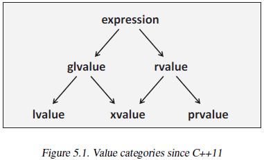
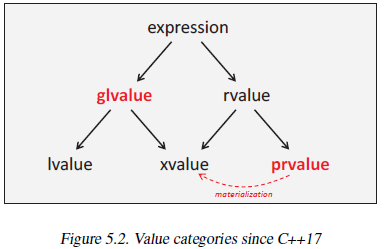
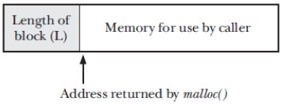
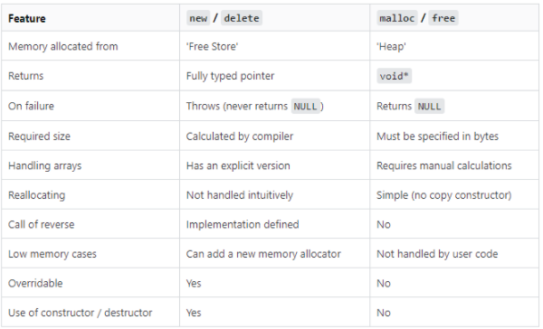

volatilehttps://en.cppreference.com/w/cpp/language/value_category
Expressions in C++ are assigned a particular value category, which determines two important-but-separate properties about an expression:
Remember value categories are a taxonomy of expressions. They are not categories of objects or variables or types.

rvalue: expressions that can be moved from, regardless of whether it has identity.
Only rvalue expressions may be used as the argument to a function that takes a parameter of type T &&.
std::move explicitly casts a non-rvalue expression into an rvalue. More specifically, it turns the expression into an xvalue. ( even if it was an identity-less prvalue expression before, by passing it as a parameter to std::move, it gains identity (the function's parameter name) and becomes an xvalue.)
xvalue (eXpiring value): expressions that are moveable from, with identity
xvalue is a glvalue that denotes an object whose resources can be reused, ie, the object they represent is going to be destroyed soon, therefore implicitly moving from them is fine.
Examples of xvalues are:
(type&&, especially returned by std::move())struct X { int n; };
extern X x;
std::move(x); // xvalue
std::forward<X&>(x); // lvalue
X{4}; // prvalue: does not have an identity
X{4}.n; // xvalue: HAS a name, so is a glvalue. can be moved from, so it's an xvalue
prvalue (pure rvalue): expressions that are moveable from, without identity
Examples of prvalue:
1, true, 0.5f, or nullptrstd::string("123").a + b, a % b, a & b, a << b, and all other built-in arithmetic expressions;The built-in addressof operator (&) cannot be applied on these expressions.
lvalue: expressions with identity but cannot be implicitly moved from.
Examples of lvalues are:
type&)struct X { ... };
X x; // x is an lvalue
X* px = &x; // px is an lvalue
*px = X{}; // *px is also an lvalue, X{} is a prvalue
X* foo_ptr(); // foo_ptr() is a prvalue (?)
X& foo_ref(); // foo_ref() is an lvalue
glvalue (generalized lvalue): expressions with identity

The key approach for explaining value categories now is that in general, we have two kinds of expressions:
In summary: prvalues perform initialization, glvalues produce locations.
struct X { int n; };
extern X x;
X{4}; // prvalue: represents initialization of an X object
x.n; // glvalue: represents the location of x's member n
X{4}.n; // glvalue: represents the location of X{4}'s member n;
// in particular, xvalue, as member is expiring
using T = X[2];
T{{5}, {6}}; // prvalue: represents initialization of an array of 2 X's
T{{5}, {6}}[0]; // xvalue: represents location of expiring array element
C++17 then introduces a new term: materialization. It is the moment when a prvalue becomes a temporary object (ie. when they denote an object). A temporary materialization conversion is a prvalue-to-xvalue conversion.
void f(const X& p); // accepts an expression of any value category, but expects a glvalue
f(X()); // expression "X()" passed in as a prvalue, and it is materialized into an xvalue.
Any time a prvalue validly appears where a glvalue (lvalue or xvalue) is expected, a temporary object is created and initialized with the prvalue (remember prvalues are expressions to initialize objects), and the prvalue is replaced by an xvalue designating the temporary. Note that materialization does not mean that we create a new/different object. The lvalue reference p still binds to both an xvalue and a prvalue, although the latter now always involves a conversion to an xvalue.
It is used for storing:
The stack is the most efficient memory space to store data, It is almost certain that this part of the memory is mirrored in the level-1 data cache if there are no big arrays.
Most compilers do not free the memory used by a variable until the function returns even though it could free the memory when exiting the {} brackets in which the variable is declared.
Same:
Stack:
Heap:
malloc() returns void *, we can assign it to any type of C pointer.malloc() is always aligned on a byte boundary suitable for any type of C data structure. In practice, this means that it is allocated on an 8-byte or 16-byte boundary on most architectures.malloc(0) may return a small piece of memory that can (and should) be freed with free().Implementation of malloc()
free() in order to find one whose size is larger than or equal to its requirements.
malloc() calls sbrk() to allocate more memory.
sbrk(), malloc() increases the program break in larger units (some multiple of the virtual memory page size)malloc() allocates the block, it allocates extra bytes to hold an integer containing the size of the block. This integer is located at the beginning of the block;
void* aligned_malloc(size_t required_bytes, size_t alignment)
{
int offset = alignment - 1 + sizeof(void*);
void* p1 = malloc(required_bytes + offset); // malloc returns void*
if ((p1 == nullptr) return nullptr;
void** p2 = (void**)(((size_t)(p1) + offset) & ~(alignment - 1)); // void** so that we can do index
p2[-1] = p1;
return p2;
}
void aligned_free(void *p)
{
void* p1 = ((void**)p)[-1]; // get the pointer to the buffer we allocated
free(p1); // free takes void*
}

Technically, memory allocated by new comes from the 'Free Store' while memory allocated by malloc comes from the 'Heap'. Whether these two areas are the same is an implementation detail, which is another reason that malloc and new cannot be mixed.
In general, free() doesn’t lower the program break. Reasons below:
sbrk() calls that the program must perform.free() function calls sbrk() to lower the program break only when the free block is at the top end and it is “sufficiently” large, where “sufficient” is determined by parameters controlling the operation of the malloc package (128 kB is a typical value).free() a NULL pointer, the call does nothing. (In other words, it is not an error to give a NULL pointer to free().
It is an error to free the same piece of allocated memory more than once. With glibc on Linux, we often get a segmentation violation (SIGSEGV signal).
Implementation of free()
When a block is placed on the (doubly linked) free list, free() uses the bytes of the block itself in order to add the block to the list, the block becomes below
calloc() allocates the memory and also initializes the allocates memory block to zero. If we try to access the content of these blocks then we’ll get 0.
calloc vs. malloc
calloc() initializes to 0
malloc() doesn’t initialize the allocated memory. If we try to access the content of the memory block then we’ll get garbage values.
Parameter difference
calloc() takes two arguments:
void * malloc( size_t size );
void * calloc( size_t num, size_t size );
Same Return Value:
malloc() and calloc(), a pointer to the block of memory is returneduse to resize a block of memory previously allocated by one of the functions in the malloc package.
void *realloc( void *ptr, size_t new_size );
realloc() attempts to coalesce the block with an immediately following block of memory on the free list, if one exists and is large enough. You will reduce memory fragmentation with it if you have a lot of dynamic allocations.
realloc() expands the heap.realloc() allocates a new block of memory and copies all existing data from the old block to the new block.NULL is passed, realloc is equivalent to malloc.
NULL call can be useful if you're allocating in some kind of loop and don't want to have a special case the first time you allocate.free() or realloc().The alloca() function allocates size bytes of space in the stack frame of the caller. This temporary space is automatically freed when the function that called alloca() returns to its caller.
free() to deallocate memory allocated with alloca(), neither is realloc() possible.Advantage of using alloca
malloc(), because alloca() is implemented by the compiler as inline code that directly adjusts the stack pointer. Furthermore, alloca() doesn’t need to maintain a list of free blocks.longjmp() case.The brk() system call sets the program break to the location specified by end_data_segment. Since virtual memory is allocated in units of pages, end_data_segment is effectively rounded up to the next page boundary.
static memory is used in below places:
The static data area is usually divided into three parts:
Advantages of static data:
disadvantages of static data:
How to avoid global variables:
It is preferable to declare a variable static and const
float SomeFunction (int x) {
static const float list[] = {1.1, 0.3, -2.0, 4.4, 2.5};
return list[x];
}
A static declaration on an initialized variable inside a function means that the variable has to be initialized the first time the function is called, but not on subsequent calls.
Most compilers will recognize that the two constants are identical so that only one constant needs to be stored. All identical constants in the entire program will be joined together in order to minimize the amount of cache space used for constants.
String constants and floating-point constants are often stored in static memory.
Integer constants are usually included as part of the instruction code. You can assume that there are no caching problems for integer constants.
static keywordsstatic has two different usage.
static initialization 6.9.3.2
A limited number of variables can be stored in registers instead of main memory.
All optimizing compilers will automatically choose the most often used variables in a function for register storage.
The same register can be used for multiple variables as long as their uses (live ranges) do not overlap.
The number of registers is limited. In 64-bit system
volatileThe effect of the keyword volatile is that it makes sure the variable is stored in memory rather than in a register and prevents all optimizations on the variable.
volatile only prevents compiler optimizations but CPU might still reorder operations and/or cache the reads/writes.
It has two affects:
memory read and write. volatile forces the compiler to generate code that performs actual memory reads and writes instead of caching values in registers.
This means that all read/write to volatile is much slower than normal read/write operations. It can hurt performance.
The value of the variable may change without any code of yours changing it that compiler will not know. Therefore whenever the compiler reads the value of the variable, it may not assume that it is the same as the last time it was read, or that it is the same as the last value stored, but it must be read again.
The act of storing a value to a volatile variable is a "side effect" which can be observed from the outside, so the compiler is not allowed to remove the act of storing a value; for example if two values are stored in a row, then the compiler must actually store the value twice.
As an example:
i = 2; i = i;
The compiler must store the number two, read the variable i, store the variable that it read into i.
All operations on volatile data are executed in the sequence they appear in the source code.
There is another situation: If a function uses setjmp and then longjmp is called, all volatile local variables of the function are guaranteed to have the last value stored - this is not the case with non-volatile local variables.
Note that volatile does not mean atomic. It will not prevent two threads from attempting to write the variable at the same time.
thread-local storage provides persistent per-thread storage. The main advantage of thread-local storage is that it is much simpler to use than thread-specific data. This feature is nonstandard, but it is provided in most UNIX implementations.
Most compilers can make thread-local storage of static and global variables by using the keyword thread_local, __thread or __declspec(thread).
To create a thread-local variable, we simply include the __thread specifier in the declaration of a global or static variable:
static __thread buf[MAX_ERROR_LEN];
__thread keyword must immediately follow the static or extern keyword, if either of these is specified in the variable’s declaration.Thread-local storage is inefficient (slow) because it is accessed through a pointer stored in a thread environment block.
Static thread-local storage should be avoided when possible. Use storage on the thread's own stack. Non-static variables and objects that are declared in the thread function, or in any function called by the thread function, will be stored on the thread's stack.